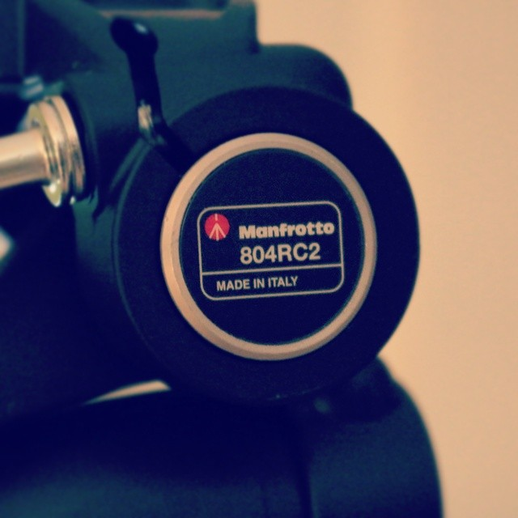

Glassware Inc. is an independent production company based in Cincinnati, OH. Originally conceived in Bellevue, WA, the founder moved the company to his hometown, believing Glassware could break the trend of creative companies typically being located in very large cities. Since then, Glassware has been scouting for the biggest talent in Cincinnati for a variety of creative areas such as photography, web design, graphic design, video editing, and more.
We use only the best equipment and software for our productions so when you work with us, you can be confident that your next production will be at it’s best. We use products such as Canon cameras, Manfrotto tripods, Rode Microphones, Ableton Live, and much more!

Our dedicated production teams work with you to get your vision the way it’s meant to be, whether on the small screen or the silver screen. We know what goes into making something truly beautiful and never settle for average. Our company goes above and beyond the call of duty to make your time well worth it.


©2014 Glassware Inc. Designed In House.